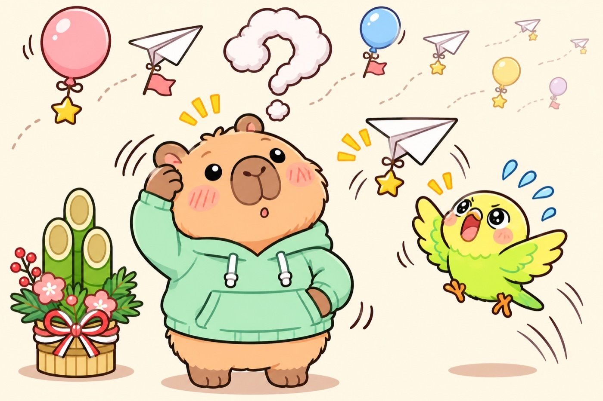
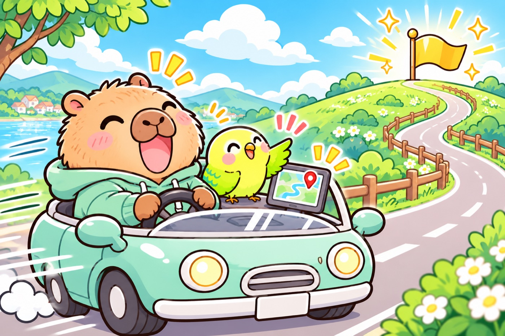
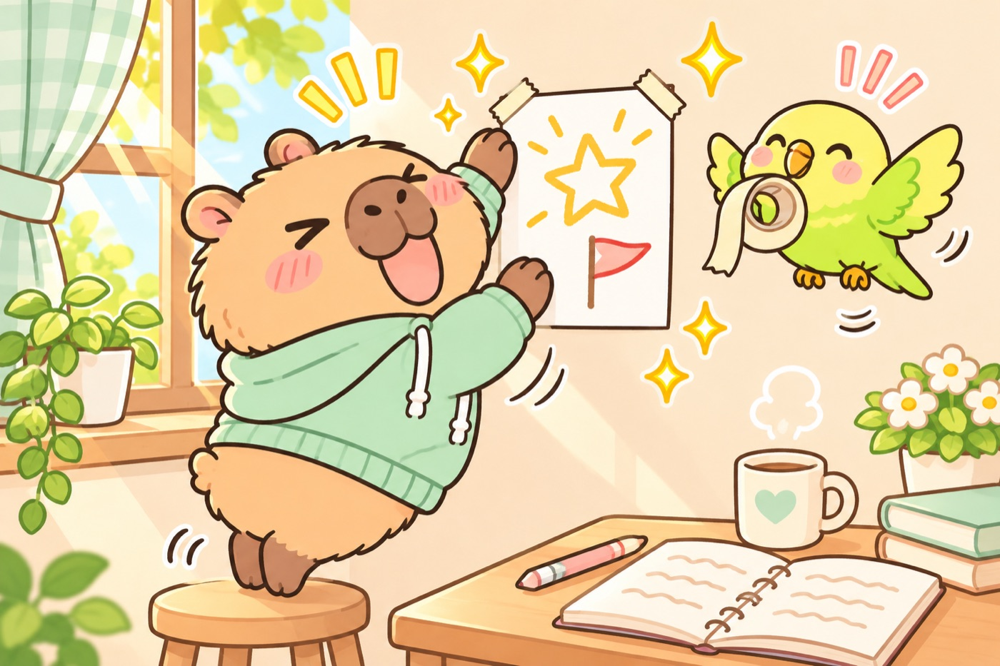

なぜ書くと願いが叶うの？
脳の「カーナビ」に目的地を入れよう🚗

そんな方、いませんか？
はい、まさに私です🤣
みなさん、こんにちは〜！
ストレングスファインダー認定コーチのおけもんです🦫
今日から、このチャットで思うがままに毎日のコラム発信を始めてみることにしましたー😆🙌（できたら毎日更新したい…！）
第1回のテーマは、「なぜ、書くと願いが叶うのか？」。
私のオフ会に何度か来ていただいた方はご存知かもしれませんが、「書くことで夢が叶った！」という方もいれば、「今から叶えていきたい！」という方もいらっしゃいますよね😊
私自身、ジャーナリングを始めてまだ1か月ちょっと、2か月は経っていないくらいなんですが、会いたい人に会えたり、参加したいチームに参加できたり、久しぶりに連絡を取りたい人と繋がれたり……。
そんな手応えを感じているところです。
じゃあ、なんで書くだけで願いが叶っていくのか？
今日はその根本のところを、わかりやすくお話ししますね🙌
🌀そもそも人は、決めたことを忘れる生き物
いきなり結論なんですが、人って「立てた目標」や「決めたこと」を忘れる生き物なんです。
ちょっと聞いていいですか？
みなさん、今年の初めに立てた目標、覚えていますか？
新年って、「今年はこうやりたい！」「あんなことできたらいいな〜」っていろいろ思い浮かべますよね。新年に限らず、ふと目標を立てることってあると思います。
でも、いざ聞かれると……。
そう、私もきれいさっぱり忘れています😂

だからこそ、「書く」んです。
書くことで、自分が決めたことをちゃんと「思い出す」ことができます😊
🚗脳みそは「車のカーナビ」みたいなもの
人の脳みそって、じつは「車のカーナビ」みたいな構造になっているんです。
目的地――つまり「こうなりたい」「これを決めた」とセットすると、そこに向かって勝手に体が動いていく仕組みなんですね🚗✨

ただ、残念ながら脳みそは毎日、何万・何十万という膨大な情報を処理していると言われています。
私たちが暮らしやすいように最適化してくれているからこそ、「今、必要なもの」しか覚えてくれないんです。
だから、せっかく立てた目標も強く刻まれていないと、あっさり「忘却の彼方」へ消え去ってしまうんですよねぇ😇
毎日入れ直すため。
みなさんにとって「向かいたい場所」は必ずあるはずです。
毎日書いたり、よく聞く「紙に書いて壁に貼る」をしたりするのは、目的地がずれないように、毎日ちゃんと思い出すためなんです😊
📌「やるやる詐欺」卒業！今日ついに壁に貼りました
じゃあ、何から始めたらいいか？
難しいことは何もいりません🙌
毎朝でも、時間が空いた時でもいいので、「私、どうなりたいんだったっけ？」を紙に書いてみる。スマホの壁紙にしてみるのもいいですよね📱✨
私の場合、今はなるべく朝6時に起きてバーチャルオフィスに行こうとしているんですが、毎朝起きたら「自分がどうなりたいか」を宣言して、ジャーナリングのノートを開いたら「自分が何をしたいんだったっけ」と書くようにしています。
そしてなんと今日！
ずっと「やるやる詐欺」だった、「紙に書いて壁に貼る」もついにやりましたー😆🙌

ここからどう変わっていくのか、みなさんと一緒に見ていけたらうれしいです😊
☘️まずは1行、見える所に置いてみませんか？
カーナビに目的地が入っていれば、あとは体がそこへ向かって動き出します。
まずは今日、自分の「向かいたい場所」を忘れないようにするところから、一緒に始めてみませんか？😊
今日は「目的地を忘れないため」のお話でした。明日は、書くことで自分の才能や強み、大切にしたい価値観に気づいていくお話です😊
▶ #2 を読む（公開しました）これまでのコラム
- 1なぜ書くと願いが叶うの？ 脳の「カーナビ」に目的地を入れよう
- 2書くと、「なぜそこへ向かいたいのか」が見えてくる
おけもんでした🦫